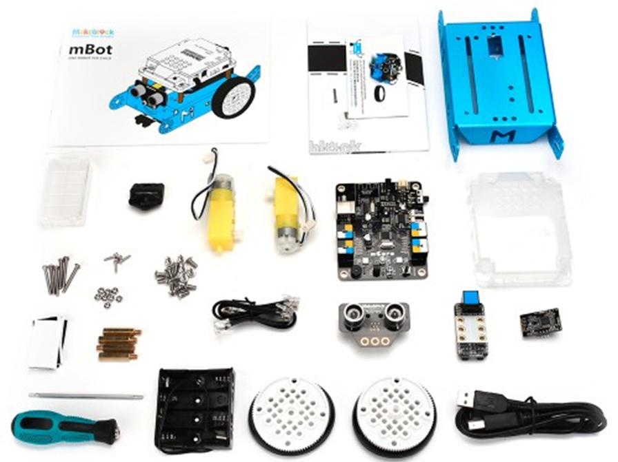

Підготовка до уроку з робототехніки
Вчитель повинен знати
- Загальну інформацію про робототехніку як науку та її взаємозв’язки з іншими науками. [4, 1]
- Мету створення і застосування роботів, а також приклади застосування. [4]
- Основні складові частини робота mBot і плати керування mCore, уміти підключати його до ПК і програмувати в середовищі mBlock. [1, 2]
- Алгоритм конструювання робота mBot базової комплектації. [2]
- Інформацію про взаємозв’язок і взаємодію основних функціональних компонентів робота (датчиків, виконавчих пристроїв і плати керування). [1]
- Як виконуються завдання для самостійного виконання та домашнє завдання із роздруківки. [1, 2]
Форма конспекту для заповнення вчителем
| Викладач | Дата | Час проведення | Кількість учнів | Вікова |
|---|---|---|---|---|
| Петренко П. П. | 14.09.2021 | 17:00-18:40 | 8-10 чоловік | 12-14 |
| № уроку | Назва уроку | |||
| 1 | Будова mBot | |||
| Тема уроку | ||||
| Вступ до курсу. Будова робота mBot. | ||||
| Мета уроку | ||||
| Навчальна |
Донести до учнів задачі курсу і охарактеризувати його основні етапи. Познайомити учнів із матеріально-технічною базою курсу. Дати учням уявлення про робототехніку, як про науку, її задачі та предмет вивчення. З’ясувати роль сучасних роботів у житті людини. Ознайомити учнів із трьома основними функціональними складовими робота (плата керування, сенсори та виконавчі пристрої), охарактеризувати їх взаємодію та роль під час виконання роботом автоматичних завдань. Познайомити учнів із будовою робота mBot, розглянути компоненти базового набору робота та їх призначення. Виконати конструювання робота, у ході якого розглянути основні входи та елементи плати керування mCore, а також особливості підключення до неї зовнішніх компонентів. Охарактеризувати для учнів техніку безпеки при роботі з роботом, навчити безпечно підключати акумулятори та перезапускати програму. |
|||
| Розвивальна | Розвивати в учнях уважність та охайність при роботі із технікою, а також дрібну моторику рук при роботі із викруткою. | |||
| Виховна | Виховувати повагу до одногрупників та вчителя, а також повагу до правил школи. | |||
| Типу уроку | Форма уроку | |||
| Вивчення нового матеріалу | Навчальний практикум | |||
| Наочність та обладнання | ||||
|
||||
| Етапи уроку | Час | |||
| Організаційний етап |
Вчитель вітається з учнями і пропонує представитись уже знайомим учням і познайомитись із новими за принципом мікрофона. Кожен з учнів повинен назвати своє ім’я та вік, а також 3 факти про себе, один із яких має бути не правдивим. Інші учні повинні відгадати, який із фактів не правдивий. Далі вчитель знайомить учнів із правила школи щодо роботи на уроці. Прийняття правил відбувається у форматі голосування. |
14 хв | ||
| Мотиваційний етап |
Учитель знайомить учнів із роботом mBot (на зображенні, або показує вже готову модель). Головна мотивація – оживити робота, для чого спочатку його необхідно сконструювати та познайомитись із його деталями. |
1-2 хв | ||
| Етап актуалізації опорних знань |
Учитель проводить з учнями бесіду, у ході якої учні повинні з’ясувати відповіді [4, 1] на наступні питання:
|
3 хв | ||
| Етап вивчення нового матеріалу |
Учитель запитує в учнів, які компоненти необхідні роботу для роботи на їхню думку. Правильні відповіді доповнені вчителем записуються на дошці. Учитель роздаєм учням набори для конструювання. Учні виконують побудову робота покроково за інструкцією [2] і прикладом вчителя. У ході конструювання вчитель відмічає на дошці які із записаних частин вже встановлені в робота. Учитель коментує кожну додану деталь, розповідаючи про її призначення в роботі (звертає увагу на приналежність до датчиків або виконавчих пристроїв). Більш детальний розгляд проводиться стосовно плати керування mCore та її компонентами. Після завершення конструювання учні вмикають живлення робота і запускають демонстраційну програму [5], перевіряють правильність підключення зовнішніх компонентів mBot. |
60 хв | ||
| Етап первинного закріплення знань |
Самостійно учні виконують вправу у роздруківці з розділу «Плата керування mCore», після чого відбувається колективна перевірка результатів та їх коригування. |
4 хв | ||
| Етап підбиття підсумків. Рефлексія |
Учитель звертається до учнів і просить підняти руки тих:
|
7 хв | ||
|
Перш ніж провести оцінювання роботи учнів вчитель пояснює учням для чого взагалі потрібно оцінювати роботу, а також у якій формі воно проводиться в даному курсі. Далі проводиться оцінювання роботи кожного з учнів. Спочатку учням пропонується оцінити самих себе. Якщо вчитель погоджується із оцінкою учня, то переносить її в журнал. Якщо вчитель не погоджується, то коригує оцінку, аргументуючи своє рішення. Важливо щоб учитель і учень врешті прийшли до єдиної думки в даному питанні, з огляду на що в розумних межах допускається дискутування із учнями. |
||||
| Інформація про домашнє завдання |
Учитель звертає увагу учнів на розділ «Домашнє завдання» в роздруківці і надає коментарі до виконання завдань. Необхідно також підкреслити важливість виконання домашніх завдань, а також наголосити, що на наступному занятті обов’язково буде перевірка. Учитель не забуває похвалити учнів та подякувати їм за їхню роботу. |
1 хв | ||
Матеріали для вчителя
- Учнівська роздруківка до уроку.
- Відеоінструкція конструювання mBot.
- Загальний опис набору mBot.
- Стаття про робототехніку.
- Файл програми для демонстрації роботи mBot.
Додаток
Базова комплектація mBot
mBlock 5
Файл тестової програми [5] можна відкрити за допомогою середовища mBlock5.
Завантажити файл для встановлення mBlock 5 можна за посиланням у цьому рядку.
Програма дозволяє роботу рухатись по лінії і зупинятись у тому випадку, якщо попереду з’являється перешкода.